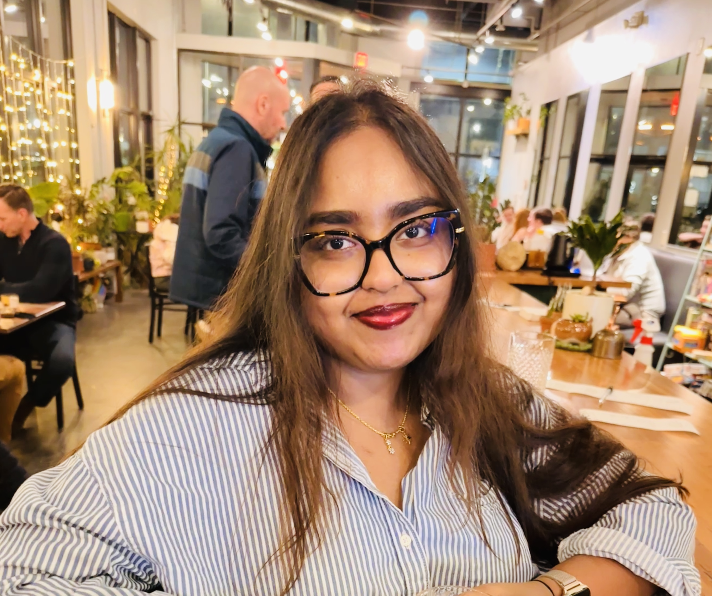

PhD Candidate / Neuroscience / University of Iowa
Koushani
Biswas
I explore how the cerebellum communicates with forebrain regions — the anterior cingulate cortex (ACC) and hippocampus (HPC) — during associative learning, using multi-site in-vivo electrophysiology to understand the importance of network activity driving these various learning paradigms.

Koushani Biswas
About
Curious about how the cerebellum talks to the forebrain during associative and spatial learning.
Cerebellum and forebrain networks
My research uncovers the neural underpinnings and network associations during associative learning — the process through which we form associations between stimuli and responses. Using advanced in vivo electrophysiology, I illuminate the significance of how the cerebellum, the ACC, and the HPC communicate among each other during associative learning.
Cerebellum, hippocampus & space
I am also uncovering how the cerebellum communicates with the hippocampus (HPC) as animals explore their environment — tracing how this cross-region dialogue shapes spatial learning and the formation of the brain's internal maps of space.
Research Experiences
Where I've worked.
Neuroscience of Learning Lab
University of Iowa, USA
Understanding the network interactions among the anterior cingulate cortex (ACC), the hippocampus (HPC) and the cerebellum in associative learning.
Laboratory of Neural Circuits and Behavior
National Institute of Science Education and Research, India
Understanding the role of the Alpha-melanocyte stimulating hormone (α-MSH) containing system in the brain of Taeniopygia guttata: relevance to the regulation of energy balance.
Olfactory Memory Research Group
Max Planck Institute of Neurobiology, Germany
Investigating how zebrafish larvae perceive odor stimuli by analysing their movement using DeepLabCut.
Neuromatch Academy — Interactive Track Project
Computational Neuroscience
Development of a sleep assistance system by personalized brain-state targeting using reinforcement learning (RL).
Neurodynamics Laboratory
Indian Institute of Science, India
Flavor-dependent retention of remote food preference memory.
Skills
Tools of the trade.
Teaching & Conferences
In the classroom & at the podium.
Teaching Experience
Elementary Psychology
Graduate Admin Teaching Assistant
Elementary Psychology
Graduate Teaching Assistant
Psychosis Spectrum
Graduate Teaching Assistant
Neuroscience of Learning and Memory
Graduate Teaching Assistant
Introduction to Behavioral Neuroscience
Graduate Teaching Assistant
Introduction to Behavioral Neuroscience
Graduate Teaching Assistant
Mentoring
Undergraduate Research Assistants
Mentoring students in electrophysiology & behavioral neuroscience
Conferences & Posters
Society for Neuroscience
Poster Presenter
Neuromatch Conference 3.0
Poster Presenter